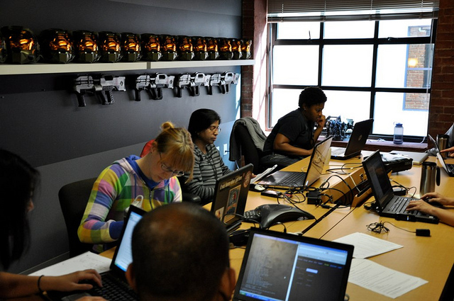
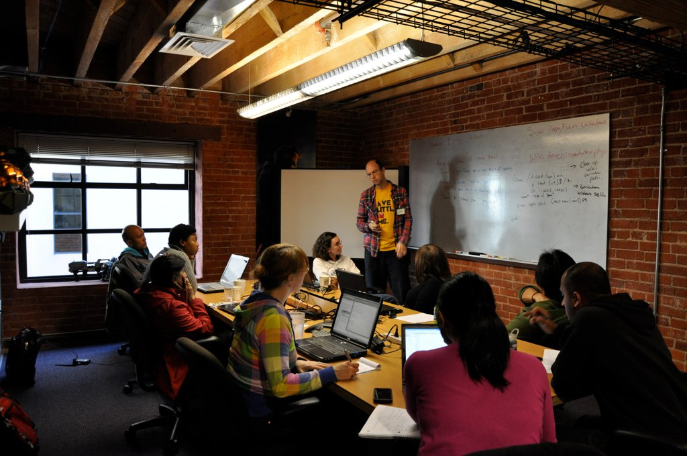

About RailsBridge.
We teach people to code because we believe that the people making technology should accurately reflect the diversity of those using it.
We want to push for all kinds of diversity in tech: gender, race, sexual orientation, ability, and class. Women were the first population we focused on, but aren't the last.
We value acceptance, enthusiasm, and hard work. The RailsBridge community thrives on optimism and a love for making great things.
What's a RailsBridge Workshop?
Our most well-known efforts are free weekend workshops where women learn Ruby on Rails from volunteers. The students at our workshops range from folks who are completely new to programming to QA engineers and professional developers who want to learn Rails. During the Installfest (usually on a Friday evening), we get students' laptops setup with the requisite technologies. The next day, we break into small group based on experience level and build a web app! (When we aren't teaching Ruby and Rails, we teach HTML & CSS.)
Origin Story
Back in the heady days of of June 2009, the San Francisco Ruby community stood at about 97% men, and 3% women. RailsBridge was started as an effort to even that out a bit. Sarah Mei and Sarah Allen figured that there were more women in (at that time) popular languages like PHP and Java, and if they could show them the wonder of developing in Ruby, perhaps they could change the SF Ruby community's makeup.
And so they held a workshop. They sent a few emails out, including one to a women in technology mailing list, and within 24 hours, the workshop was full. It turned out every speculation of "Well, maybe there aren't more women in programming because they just aren't interested" was 100% rubbish (as we all knew), and there has been an insatiable appetite for education and community every since that first workshop.
The Open Workshop project (at it was then known) was just one part of RailsBridge. RailsBridge also put on Rails Bug Mashes (or bug smashes, depending on who you ask), taught Ruby to kids, set up online mentoring, and sponsored other projects. Over time, the name RailsBridge has become synonymous with the workshops.
Where is RailsBridge?
Everywhere! This thing started in San Francsico (and workshops happen there at the alarming rate of one to two per month), but workshops have popped up all over the world, thanks to enterprising organizers who have donated their time to make workshops happen in their communities. Check out our past events and our chapters page to see all the different places that workshops happen.
Some places have workshops regularly, and sometime workshops can be independent, one-time events put on by people trying to make their Ruby communities more diverse. Workshops are also put on in conjunction with tech conferences. Desi McAdam, Renée De Voursney, and Sarah Mei are all in the wonderful habit of organizing and teaching workshops at conferences they're attending.

Who's in charge?
You are! Or perhaps you will be in the future. RailsBridge is extremely non-hierarchical, and we believe strongly that we should have a high bus number. As an organization whose output is entirely open source, all of RailsBridge's growth is a result of the efforts of members of the community — people who see an opportunity for improvement and make it happen. Legally, RailsBridge is a project of Bridge Foundry, which itself is part of School Factory, an organization that creates and supports communities and spaces that transform education.
Want more?
Here are just a few writeups about RailsBridge and its impact on individual people and the larger Ruby community: